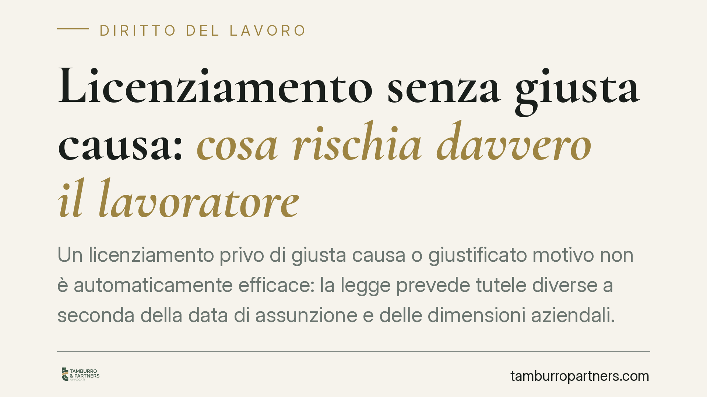

Licenziamento senza giusta causa: cosa rischia davvero il lavoratore
Un licenziamento privo di giusta causa o giustificato motivo non è automaticamente efficace: la legge prevede tutele diverse a seconda della data di assunzione e delle dimensioni aziendali. Conoscere il regime applicabile e i termini di impugnazione è decisivo, perché le opzioni difensive si chiudono rapidamente e in modo irreversibile.

Il quadro: tre regimi a confronto
Quando un datore di lavoro licenzia senza un valido motivo, le conseguenze non sono uniformi. Dipendono soprattutto dalla data di assunzione del lavoratore e dal numero di dipendenti dell'azienda.
Per i rapporti sorti prima del 7 marzo 2015 si applica l'articolo 18 dello Statuto dei lavoratori (L. 300/1970), come riformato dalla L. 92/2012 (riforma Fornero). Questo regime distingue diverse ipotesi: nei casi più gravi (ad esempio licenziamento discriminatorio o nullo) è prevista la reintegra, cioè il reinserimento nel posto di lavoro più un'indennità; in altri casi è dovuta solo una tutela economica.
Per chi è stato assunto dal 7 marzo 2015 in poi vale invece il D.lgs. 23/2015, il cosiddetto Jobs Act, che ha introdotto il contratto a tutele crescenti. Qui la reintegra resta un'ipotesi residuale, mentre la regola generale è il risarcimento economico.
Il punto sull'indennità: la sentenza 194/2018
Il Jobs Act, nella sua versione originaria, ancorava l'indennità a un calcolo rigido basato sull'anzianità di servizio. La Corte costituzionale, con la sentenza n. 194 del 2018, ha dichiarato illegittimo questo automatismo: il giudice non può limitarsi a moltiplicare le mensilità per gli anni di servizio, ma deve valutare il caso concreto (numero dei dipendenti, dimensioni dell'attività, comportamento e condizioni delle parti). L'anzianità resta un criterio, ma non l'unico.
Le piccole imprese
Un capitolo a parte riguarda le piccole imprese, individuate dalla legge come i datori che occupano fino a 15 dipendenti nella singola unità produttiva (o fino a 60 complessivi sul territorio nazionale). Per queste realtà il D.lgs. 23/2015 prevede una tutela economica ridotta, con importi inferiori rispetto alle aziende di maggiori dimensioni.
Sul regime risarcitorio delle piccole imprese la Corte costituzionale è già intervenuta con la sentenza n. 183 del 2022: in quell'occasione la Corte non ha dichiarato l'illegittimità della disciplina, ma ha rivolto un monito al legislatore, segnalando l'inadeguatezza di un tetto risarcitorio troppo rigido e invitando a un intervento di riforma. Si tratta di un'area in evoluzione, da monitorare perché la cornice normativa potrebbe cambiare.
Cosa cambia per chi riceve un licenziamento
In concreto, il lavoratore che ritiene illegittimo il proprio licenziamento deve fare i conti con due variabili: il regime applicabile (data di assunzione) e le dimensioni aziendali. Da queste dipendono la possibilità stessa di ottenere la reintegra e l'entità dell'eventuale indennità.
Altrettanto importante è il fattore tempo. L'impugnazione del licenziamento è soggetta a termini di decadenza stringenti: lasciarli scadere significa perdere ogni possibilità di contestazione, a prescindere dalla fondatezza delle ragioni.
Cosa fare in concreto
- Impugna il licenziamento entro 60 giorni dalla ricezione della comunicazione. L'art. 6 della L. 604/1966 prevede questo termine per l'impugnazione stragiudiziale, che può avvenire con qualsiasi atto scritto idoneo a manifestare la volontà di contestare il recesso (anche tramite il sindacato o il legale).
- Deposita il ricorso o attiva la conciliazione entro i successivi 180 giorni. Entro questo termine occorre depositare il ricorso giudiziale oppure comunicare alla controparte la richiesta del tentativo di conciliazione o arbitrato. Se la conciliazione fallisce o viene rifiutata, decorre un ulteriore termine di 60 giorni per il deposito del ricorso in tribunale.
- Conserva tutta la documentazione: lettera di licenziamento, buste paga, contratto, comunicazioni aziendali ed eventuali testimoni. Serviranno a ricostruire il rapporto e a verificare il regime di tutela applicabile.
- Verifica le dimensioni dell'azienda (dipendenti nell'unità produttiva e sul territorio nazionale): è il dato che determina se sei nell'area della tutela ridotta delle piccole imprese o in quella ordinaria.
- È opportuno acquisire una valutazione professionale prima della scadenza dei 60 giorni, per non compromettere le opzioni difensive e scegliere consapevolmente tra impugnazione, conciliazione e azione giudiziale.
Il regime dei licenziamenti illegittimi resta materia in movimento, condizionata dalle pronunce della Corte costituzionale e da possibili interventi normativi. Un'analisi del singolo caso è indispensabile prima di qualsiasi decisione.
---
Contributo informativo a cura di Tamburro & Partners Avvocati - Avv. Giuseppe Tamburro. Non costituisce parere legale.
Ogni storia di lavoro ha i suoi tempi.
Se gestisci HR e vuoi un confronto su contenzioso, ispezioni o licenziamenti, scrivi allo studio. Ti rispondiamo entro un giorno lavorativo.